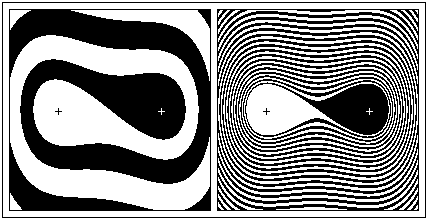

|  |
| Here we have assembled the phase plane data for thousands of initial positions and speeds. |
| From the position and speed represented by each black point, the pendulum eventually comes to rest over the right magnet. |
| Taken together, the black points constitute the basin of attraction of the right magnet. |
| From the position and speed represented by each white point, the pendulum eventually comes to rest over the leftt magnet. |
| The white points form the basin of attraction of the left magnet. |
| The left picture shows the situation for high damping, the right for lower damping. |
Return to Mechanical Basin Boundaries.